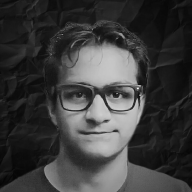
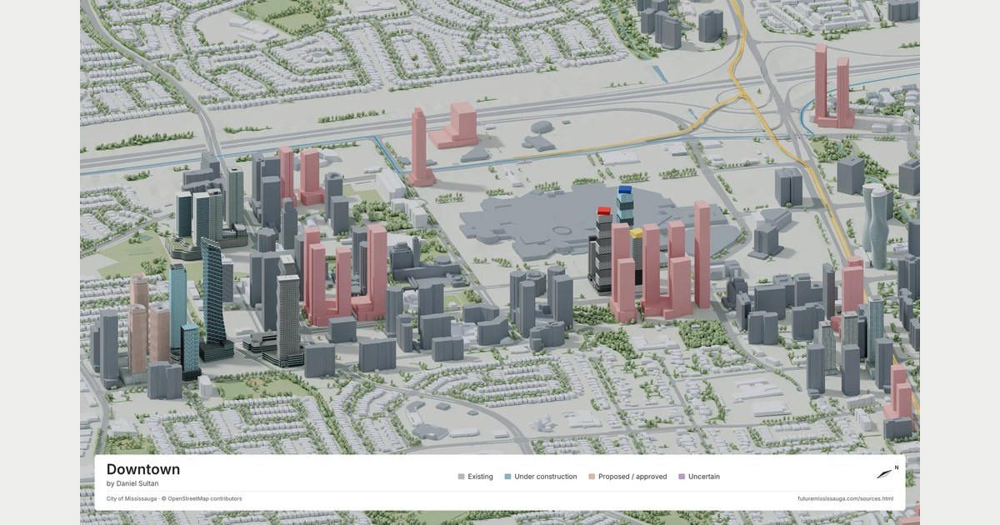

About Daniel Sultan
I build Future Mississauga so you can see how a proposal might change a street you know.

How I model the city
I start with the City’s 3D buildings. For M City, I used planning drawings, floor plans and photographs to model the towers in Blender.
Explore the building studiesWorking from drawings
Developers and architects help me fill in the details. At 41 Bay Street, elevations and a photograph helped me shape the roof and wraparound porch.
See the 41 Bay study